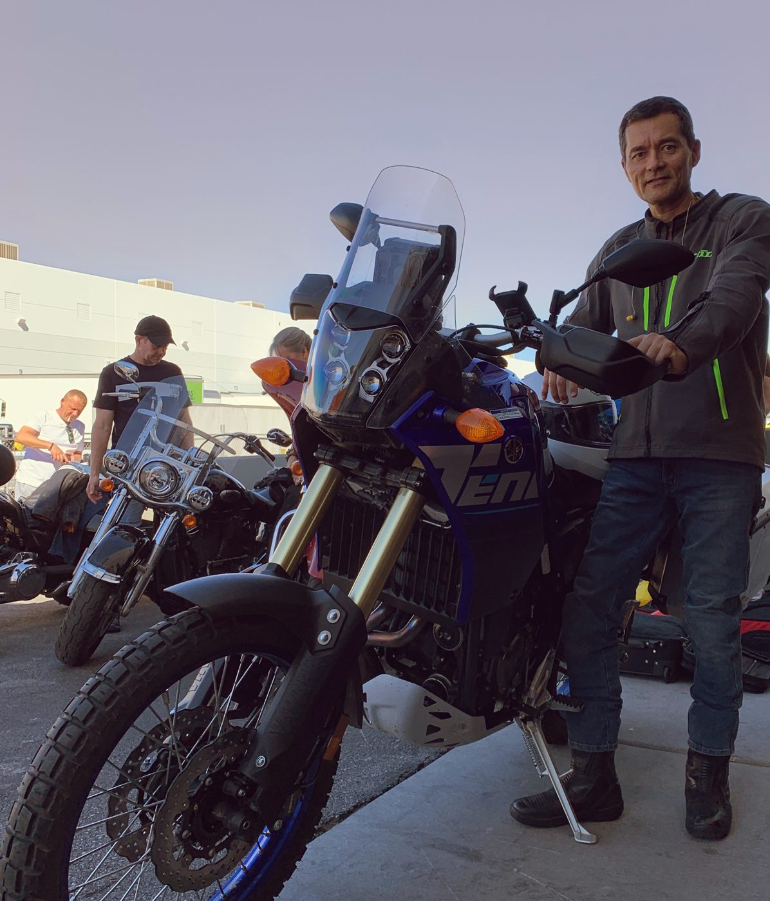
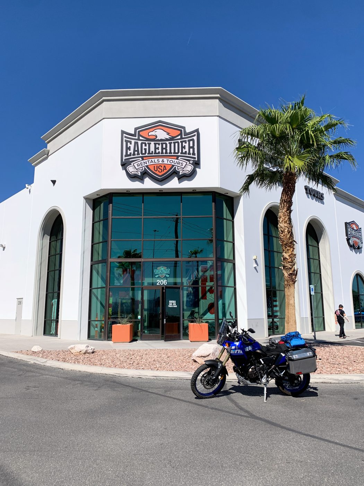
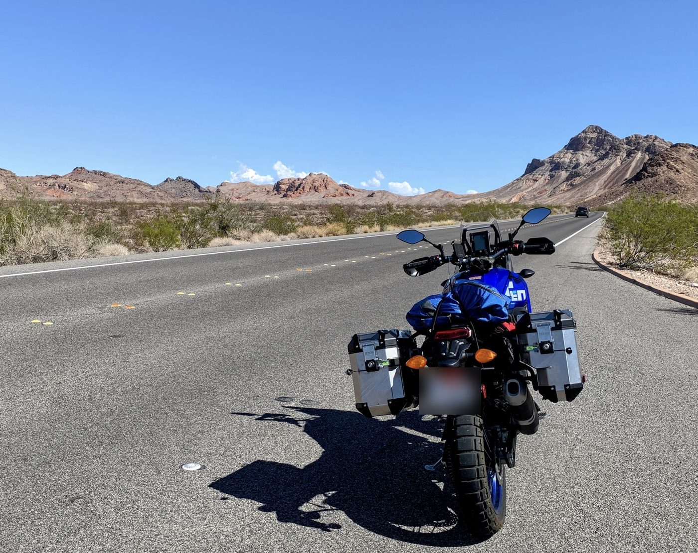
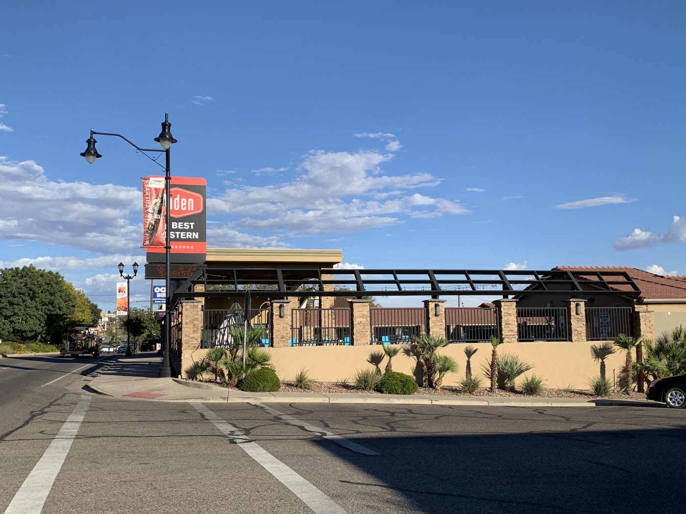
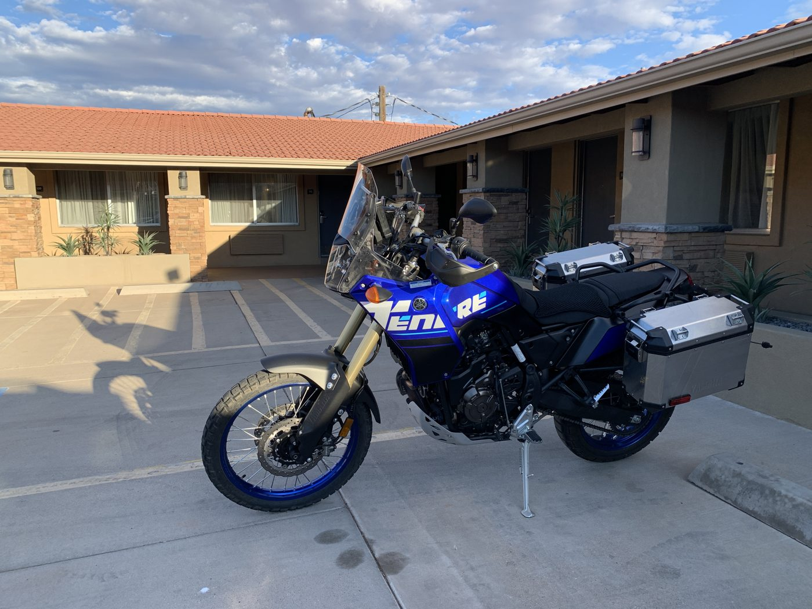
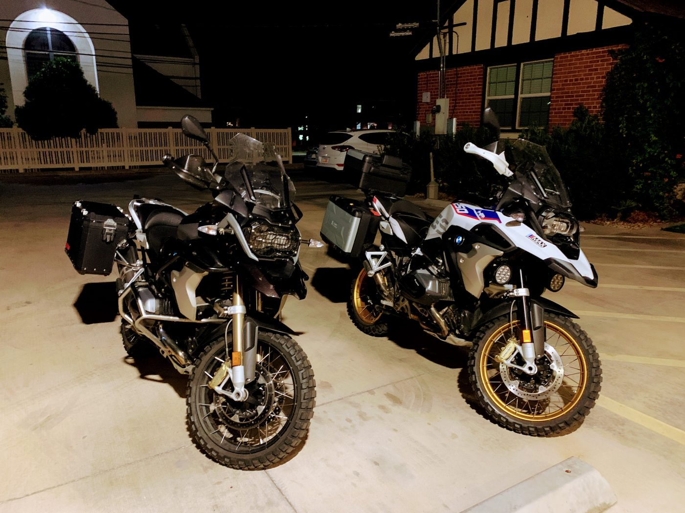

Arrive · Sat, Oct 8
St. George, UT
Conveniently on St. George Boulevard with easy access from I-15. Basic, adequate rooms, a cozy lobby for a late-night meeting and breakfast, and a welcoming front desk happy to share local knowledge. Café Sabor, a decent Mexican restaurant, is right next door.






Overnight
Aiden by Best Western
316 E. St. George Blvd, St. George, UT